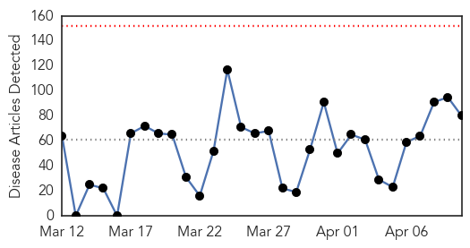
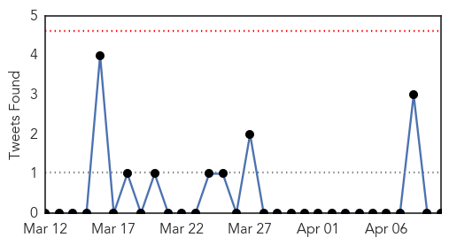
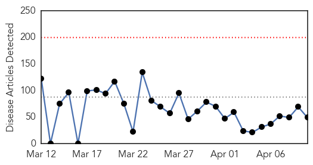
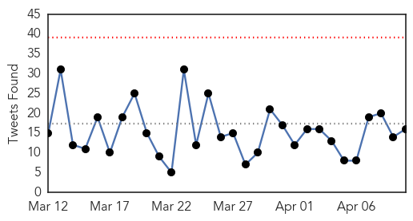
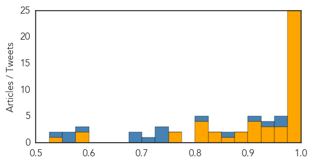

Unknown
30-Day Web Trend
0 alerts, 0 warnings

30-Day Twitter Trend
0 alerts, 0 warnings

Article Locations

Article Confidences

Top Articles:
- 0.987
- The Brief Blog Archive Flu-like disease kills 10
- 0.987
- What Is Powassan Virus? Rare Tick Infection Could Be Worse Than Lyme Disease
- 0.986
- Powassan virus spreading to humans by infected ticks; rare and fatal
- 0.984
- Powassan Virus Spreads, Could Be More Deadly Than Lyme Disease
- 0.958
- Powassan (POW) virus becoming more common across the country
- 0.933
- Listeria Fast Facts
- 0.917
- Chicago Tribune
- 0.917
- Chicago Tribune
- 0.917
- Chicago Tribune
- 0.917
- Chicago Tribune
- 0.917
- Chicago Tribune
- 0.917
- Chicago Tribune
- 0.917
- Chicago Tribune
- 0.917
- Chicago Tribune
- 0.917
- Chicago Tribune
- 0.917
- Chicago Tribune
- 0.917
- Chicago Tribune
- 0.917
- Chicago Tribune
- 0.917
- Chicago Tribune
- 0.917
- Chicago Tribune
- 0.917
- Chicago Tribune
- 0.917
- Chicago Tribune
- 0.917
- Chicago Tribune
- 0.917
- Chicago Tribune
- 0.917
- Chicago Tribune
- 0.917
- Chicago Tribune
- 0.917
- Chicago Tribune
- 0.917
- Chicago Tribune
- 0.917
- Chicago Tribune
- 0.917
- Chicago Tribune
- 0.917
- Chicago Tribune
- 0.917
- Chicago Tribune
- 0.915
- The most from the coast
- 0.914
- Mosquito-disease Ross River fever warning after wet weather
- 0.912
- Officials Suspend License of Idaho Restaurant Linked to Salmonella Outbreak
- 0.910
- The world windows to Thailand
- 0.910
- The world windows to Thailand
- 0.910
- The world windows to Thailand
- 0.910
- Chicken farm quarantined as Niger suspects bird flu
- 0.908
- Avian flu confirmed at a 14th MN turkey farm – so what does the future hold?
- 0.900
- Columbus Public Health Tracks Stomach Bug Outbreak
- 0.891
- TR4 hits second banana farm
- 0.887
- Tainted Blue Bell Ice Cream Kills Three People In Kansas — How Does Listeria Lead To Deadly Desserts?
- 0.869
- CWRU using multiple grants to advance search for TB vaccine
- 0.862
- Woman's 'Burning Mouth Syndrome' Had Strange Cause
- 0.862
- Drug-resistant stomach bug hitting NJ, US
- 0.858
- U.S. bird flu outbreak accelerates as wild ducks migrate north
- 0.838
- MacBook Pro: ¿Me cambio a Haswell?
- 0.789
- gov’t, National, Phnom Penh Post
- 0.783
- First report of a new crop virus in North America
Showing top 50 articles...
Top Tweets:
-
No tweets found for Apr 10, 2015
Ebola
30-Day Web Trend
0 alerts, 0 warnings

30-Day Twitter Trend
0 alerts, 0 warnings

Article Locations
Article Confidences
Top Articles:
- 1.000
- UPDATE 2-Risk of Ebola spreading to other countries appears to be falling -WHO
- 1.000
- UPDATE: U.S. Ebola Patient Fully Recovered, Leaves Hospital -
- 1.000
- Ebola restrictions remain in place
- 0.999
- American Treated for Ebola Released From NIH Hospital
- 0.998
- Ebola vaccine hits milestone in Baltimore
- 0.998
- Woman isolated for possible Ebola
- 0.998
- Canada's Chief Public Health Officer To Visit West Africa
- 0.998
- Lowest weekly Ebola figure in nearly a year: WHO:Thursday 9 April 2015
- 0.998
- ‘Progress’ in Ebola fight, but ‘substantial risks’ remain: WHO
- 0.998
- Woman isolated for possible Ebola
- 0.998
- Woman isolated for possible Ebola
- 0.998
- Ebola breakthrough? Profectus vaccine succeeds in monkeys
- 0.998
- Ebola survivors ‘face health issues’
- 0.998
- www.cowracommunitynews.com
- 0.997
- Canada's Chief Public Health Officer to visit West Africa
- 0.996
- Ebola virus: Liberia watchdog says $800,000 in funding for fight against outbreak unaccounted for
- 0.996
- Pros and cons of Sierra Leone's Ebola lockdowns
- 0.992
- Ebola medical store for Tema Hospital
- 0.991
- Liberia: Food Aid Provides Returning Students Nutritious Meals Thanks to Salesian Missions Partnership with Feed My Starving Children - Liberia
- 0.991
- Hope Looks Like: A Plane On The Way
- 0.990
- Statement on the 5th meeting of the IHR Emergency Committee regarding the Ebola outbreak in West Africa
- 0.990
- Ebola Virus: What Happened To Those ‘Precautions’?
- 0.984
- WHO: Ebola survivors at risk of eye and joint problems - Panorama
- 0.983
- Tekmira gets nod for more Ebola drug testing
- 0.978
- WHO Ebola diaries: Changing the health worker culture - Guinea
- 0.973
- Swedish envoy extols Lofans in fight against Ebola
- 0.968
- Counties getting $38K Ebola grants - LeaderHerald.com
- 0.967
- 138 suspected Ebola cases tested in Ghana
- 0.944
- Squabbles over testing methods hamper search for Ebola vaccine
- 0.943
- US clinician cured of Ebola, leaves hospital
- 0.926
- Japanese Ebola test gives results in 11 minutes: researchers
- 0.923
- American Health Worker Discharged From Hospital After Receiving
- 0.921
- Cancel debt of ‘Ebola countries’ – Mahama reiterates
- 0.917
- Profectus Ebola vaccine shown to be effective
- 0.916
- Ebola volunteers in Ghana to receive state honours- Mahama announces
- 0.897
- How Guinea’s Journalists are Fighting to Win the War Against Ebola
- 0.892
- Setting the motion for a robust post Ebola recovery, President Koroma’s care for the poor takes center stage.
- 0.856
- Reuters Health News Summary
- 0.840
- Bayraytay engages Sierra Leoneans in the UK on political events and Ebola issue back home
- 0.831
- Some Ebola Victims Concerned Theyll Never Get International Aid
- 0.821
- Opinion: White helmets to the rescue?
- 0.814
- Ghanaian urges donors to cancel debt of Ebola-hit countries - Xinhua
- 0.808
- PostBulletin.com
- 0.808
- Daily American
- 0.763
- New Technology to Help West African Nation Deal With Complicated Medical Waste Problem
- 0.756
- History repeating itself: using the medicine of the past to find the treatments of the future
- 0.599
- CHINA AND AFRICA COLLABORATE TO IMPROVE HEALTH COVERAGE FOR ALL
- 0.582
- Because I am a Girl Blog Invest in girls and change the world3 pressing health issues affecting girls in developing countries
- 0.531
- WHO sets up emergency rapid response network
Top Tweets:
- 0.993
- Ebola potential drug target. An Intrinsically Disordered Peptide from Ebola Virus VP35 Controls Viral RNA Synthesis shttp://sco.lt/99XGbZ
- 0.949
- Cancel debt of 'Ebola countries' – Mahama reiterates - GhanaWeb http://t.co/h6umaGUhu0 ebola EVD
- 0.942
- Sanford adds rooms capable of handling Ebola patients - INFORUM http://t.co/MEohuxLKkV ebola EVD
- 0.930
- American Treated for Ebola Released From NIH Hospital - TIME http://t.co/AbGym0Jh1w ebola EVD
- 0.893
- Countermeasures to Address the Ebola Virus (EBOV) Threat @OMICSGroup http://t.co/EmBtqDBq2O
- 0.889
- Ebola Update: 25,556 confirmed, probable and suspected cases reported in 3 most affected countries, with 10,587 deaths. EbolaResponse
- 0.887
- Risk of Ebola spreading to other countries appears to be falling: WHO - Reuters http://t.co/3xExdK7XL2 ebola EVD
- 0.864
- RT: Strengthening Africa’s health care: Joint trip by Min’s, Müller+Ebola coord. Lindner to Ghana+Liberia http:…
- 0.842
- Ebola, the killer virus http://t.co/9XxxOvrbar
- 0.836
- 'Fearless' Ebola nurse trains at Emory University - CNN http://t.co/VLCF8ix2YI ebola EVD
- 0.781
- Tekmira will resume safety study of Ebola drug within weeks - Fox News http://t.co/yLPdGkqavs ebola EVD
- 0.778
- Tekmira Approved to Continue Ebola Treatment Clinical Trials - Wall Street Journal http://t.co/g7jM9FFhf8 ebola EVD
- 0.761
- Statement on the 5th meeting of the IHR Emergency Committee regarding the Ebola outbreak in West Africa http://t.co/sJpIUnFO0H
- 0.707
- An Artist's Brainstorm: Put Photos On Those Faceless Ebola Suits - NPR (blog) http://t.co/siFtayD0FS ebola EVD
- 0.681
- RT: Two Ebola vaccines pass an early test, protecting monkeys against the strain of virus in the recent outbreak http://t.co/fexWd…
- 0.648
- RT: Watch segment on Ebola grand challenge to create new suit to help prevent spread of the disease http://t.co/YXvExH9RmT…
- 0.624
- Pros and cons of SierraLeone's Ebola lockdowns http://t.co/Pg6t2ZpYQ7
- 0.617
- Ebola: The Fight To Reach Zero And The Road To Recovery - Huffington Post http://t.co/h7hGNX15Sz ebola EVD
- 0.616
- sierraleone Outcome from the Kailahun ebola positive Case Investigation pressstatement http://t.co/jWMalNJEqF …
- 0.569
- Of the 55 districts that reported at least 1 case of Ebola, 35 haven't reported a case in over 6 weeks EbolaResponse http://t.co/82lsL5ujXD
- 0.561
- Still not out of the woods yet on Ebola Guinea & Sierra Leone crisis levels still above June 2014. http://t.co/r4YsdwGTfR
- 0.560
- Video. Disposing of Ebola waste in Liberia wastemanagement http://t.co/g8usq8Bx5Z
- 0.543
- Life on the Ebola frontline: 'The virus took a knife to our Easter celebrations' @guardian http://t.co/i7wVWUm93A
- 0.541
- Readability of Ebola Information on Websites of Public Health Agencies, US, UK Canada, Australia, Europe cdcgov http://t.co/udrte9KUeM
- 0.536
- Woman tested for Ebola in isolation ward at Canberra Hospital http://t.co/ezw7yAzsfF
- 0.511
- RT: Ebola still global emergency despite big drop in cases, says UN http://t.co/LI4Kk0qZVq
- 0.509
- Meet these "contact children" who have lost family to Ebola and are now living in quarantine http://t.co/Jpi8P9BhRK EbolaResponse